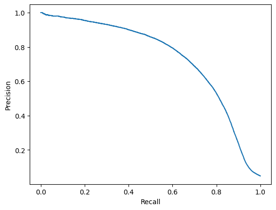
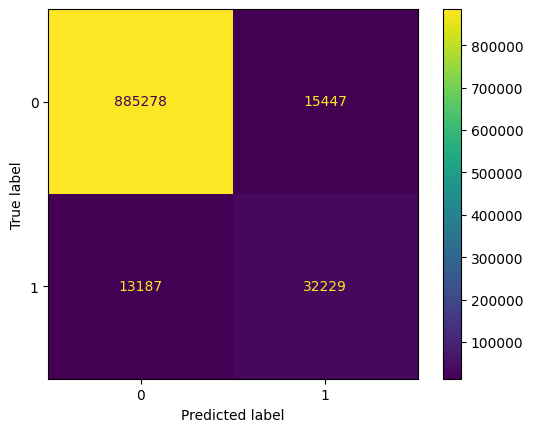

from pathlib import Path
import pickle
from mhcpred.config import settings
import pandas as pd
from sklearn.metrics import accuracy_score, confusion_matrix, balanced_accuracy_score
from sklearn.metrics import classification_report
from sklearn.metrics import ConfusionMatrixDisplay
import matplotlib.pyplot as plt
models_path = Path(settings.models_path)
output_path = Path(settings.output_path)This notebook contains training metrics history and classification metrics computed on the predictions by - mhcflurry (benchmark) - mhcpred
In [25]:
Information on the training history
I prefer to use tensorboard, but it is not implemented in the mhcflurry package. The information is quite scarce, but when you execute the code, you have the loss for each step and not only for the whole epoch. Of course, it is a very basic version of logging and should be improved.
In [26]:
with open(str(models_path / "model.pickle"), "rb") as f:
model = pickle.load(f)In [27]:
model.fit_info[{'learning_rate': 0.0010000000474974513,
'loss': [0.09700655937194824, 0.06465369462966919],
'val_loss': [0.06880103051662445, 0.05075661838054657],
'time': 524.7155420780182,
'num_points': 6628048}]Binary classification metrics
We compute the usual binary classification metrics on the unbalanced test dataset: accuracy, balanced accuracy, confusion matrix and classification report by scikit-learn.
We report the unbalanced accuracy because the dataset is very unbalanced so the accuracy only is not a good measure of accuracy (the model can predict always False and it works quite well).
mhcflurry metrics
In [28]:
mhcflurry_rank_percentile_threshold = 2 # rank threshold for positive hits
# It comes from the mhcflurry article.In [29]:
df = pd.read_csv(str(output_path / "mhcflurry_predictions.csv"))
y_pred = df.prediction_percentile.values <= mhcflurry_rank_percentile_threshold
y_true = df.hit.values
acc = accuracy_score(y_true=y_true, y_pred=y_pred)
confusion_mat = confusion_matrix(y_true=y_true, y_pred=y_pred)
balanced_acc = balanced_accuracy_score(y_true=y_true, y_pred=y_pred)
class_report = classification_report(y_true=y_true, y_pred=y_pred, output_dict=False)
disp = ConfusionMatrixDisplay(confusion_matrix=confusion_mat)
disp.plot()
plt.show()
In [30]:
print(class_report) precision recall f1-score support
False 0.99 0.98 0.99 900996
True 0.67 0.86 0.76 45423
accuracy 0.97 946419
macro avg 0.83 0.92 0.87 946419
weighted avg 0.98 0.97 0.97 946419
In [31]:
acc, balanced_acc(0.9731936911663861, 0.9217833819652606)The metrics are quite good. We note that we do not have a good precision on the True class (0.67), the model has a tendency to predict True too often, so we have too many False Positives. We see it on the confusion matrix, 19234 False Positives.
mhcpred metrics
In [32]:
mhcpred_proba_threshold = 0.5 # by default, but we try to tune it laterIn [33]:
df = pd.read_csv(str(output_path / "mhcpred_predictions.csv"))
y_true = df.hit.values
y_pred = df.predictions.values >= mhcpred_proba_threshold
acc = accuracy_score(y_true=df.hit.values, y_pred=y_pred)
confusion_mat = confusion_matrix(y_true=df.hit.values, y_pred=y_pred)
balanced_acc = balanced_accuracy_score(y_true=df.hit.values, y_pred=y_pred)
class_report = classification_report(y_true=y_true, y_pred=y_pred, output_dict=False)
disp = ConfusionMatrixDisplay(confusion_matrix=confusion_mat)
disp.plot()
plt.show()In [34]:
acc, balanced_acc(0.9731657332258088, 0.7775326900487307)In [35]:
print(class_report) precision recall f1-score support
False 0.98 0.99 0.99 900725
True 0.82 0.56 0.67 45416
accuracy 0.97 946141
macro avg 0.90 0.78 0.83 946141
weighted avg 0.97 0.97 0.97 946141
mhcpred has worse performances compared to mhcflurry, see the balanced accuracy. On the True class, in that case, the recall is not good (0.56), the model has a tendency to predict False too often, on the confusion matrix we have 20000 True Negatives. It indicates that if we lower the threshold, we may improve the model.
Threshold tuning
We plot the precision recall curve to try to identify a better threshold.
In [36]:
from sklearn.metrics import precision_recall_curve, PrecisionRecallDisplay
precision, recall, thresholds = precision_recall_curve(y_true=y_true, probas_pred=df.predictions.values)
disp = PrecisionRecallDisplay(precision=precision, recall=recall)
disp.plot()
plt.show()
In [37]:
precision_recall_thresholds = pd.DataFrame({
"precision": precision[:-1],
"recall": recall[:-1],
"thresholds": thresholds,
})In [38]:
precision_recall_thresholds| precision | recall | thresholds | |
|---|---|---|---|
| 0 | 0.048001 | 1.000000 | 0.000114 |
| 1 | 0.048001 | 1.000000 | 0.000116 |
| 2 | 0.048001 | 1.000000 | 0.000117 |
| 3 | 0.048001 | 1.000000 | 0.000125 |
| 4 | 0.048002 | 1.000000 | 0.000125 |
| ... | ... | ... | ... |
| 889313 | 1.000000 | 0.000110 | 0.992152 |
| 889314 | 1.000000 | 0.000088 | 0.992280 |
| 889315 | 1.000000 | 0.000066 | 0.992347 |
| 889316 | 1.000000 | 0.000044 | 0.992431 |
| 889317 | 1.000000 | 0.000022 | 0.992971 |
889318 rows × 3 columns
A threshold of approx. 0.2 seems to be a good compromise for precision/recall.
In [39]:
mhcpred_proba_threshold = 0.2In [40]:
df = pd.read_csv(str(output_path / "mhcpred_predictions.csv"))
y_true = df.hit.values
y_pred = df.predictions.values >= mhcpred_proba_threshold
acc = accuracy_score(y_true=df.hit.values, y_pred=y_pred)
confusion_mat = confusion_matrix(y_true=df.hit.values, y_pred=y_pred)
balanced_acc = balanced_accuracy_score(y_true=df.hit.values, y_pred=y_pred)
class_report = classification_report(y_true=y_true, y_pred=y_pred, output_dict=False)
disp = ConfusionMatrixDisplay(confusion_matrix=confusion_mat)
disp.plot()
plt.show()
In [41]:
acc, balanced_acc(0.9697360118629252, 0.8462451280426622)In [42]:
print(class_report) precision recall f1-score support
False 0.99 0.98 0.98 900725
True 0.68 0.71 0.69 45416
accuracy 0.97 946141
macro avg 0.83 0.85 0.84 946141
weighted avg 0.97 0.97 0.97 946141
We see that we have improved the balanced accuracy. We have a deterioration of the precision but a better recall.